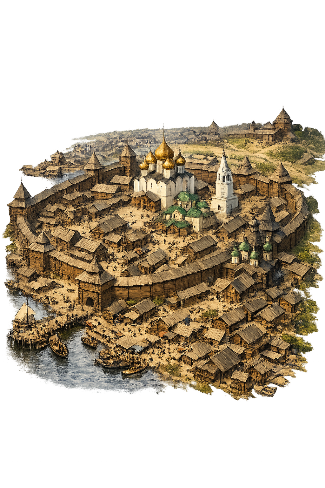
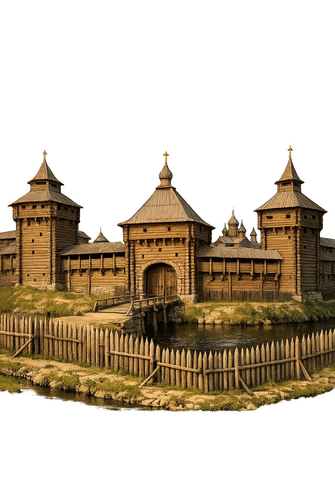
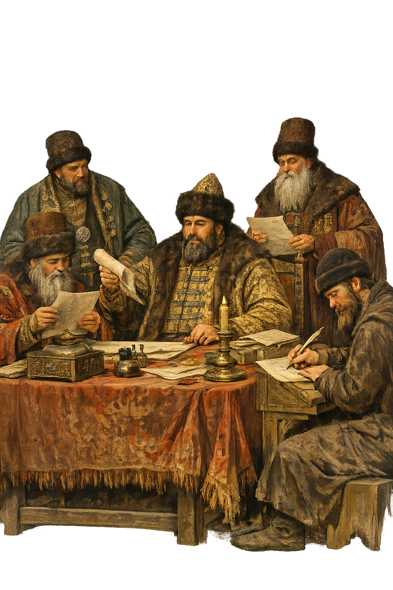

Средневековый русский город
VI–XVII вв.
Типы поселений
Город, пригород, посад, слобода, погост, село, деревня, починок. Город – укреплённый административный и военный центр.

Кремль, посад и слободы
Кремль (град) – крепость с собором и администрацией. Посад – торгово-ремесленная часть. Слободы – привилегированные поселения за стенами.

Оборонительные сооружения
Деревянные и каменные стены с башнями, рвы, валы, остроги, засеки. На южных рубежах – укреплённые линии с надолбами.

Улицы и жилые постройки
Улицы немощёные, в грязь клали деревянные мостки. Дома деревянные, рубленые «во мху», у богатых – хоромы с теремами и резьбой.

Церкви и
административные
постройки
административные
постройки
Церкви (часто каменные), приказная изба, воеводский двор, гостиный двор, тюрьма, житницы, пороховые погреба.

Органы власти
Воевода (назначался царём), приказная изба с дьяками. На посаде – земская изба, выборные старосты и целовальники.

Москва X V I – X V I I веков
Кремль, Китай-город, Белый город, Земляной город, слободы. Огромный по тем временам мегаполис с 40 тысячами домов.

Повседневная жизнь
Ремёсла, торговля, служба. Патриархальный уклад, религиозность. Рынки, лавки, ремесленные мастерские.

Значение древнерусских
городов
городов
Центры политической, экономической и культурной жизни. Основа обороны и объединения русских земель.

by @axonde